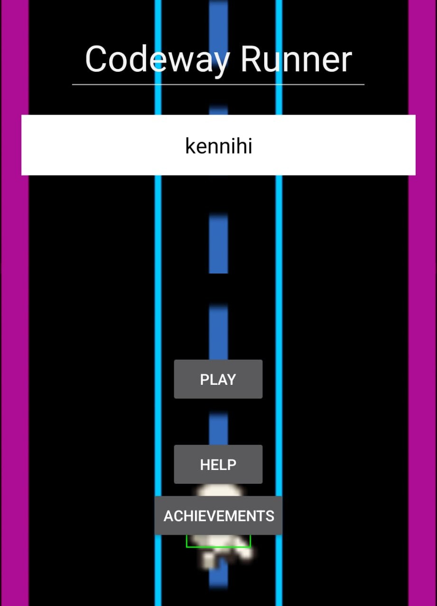
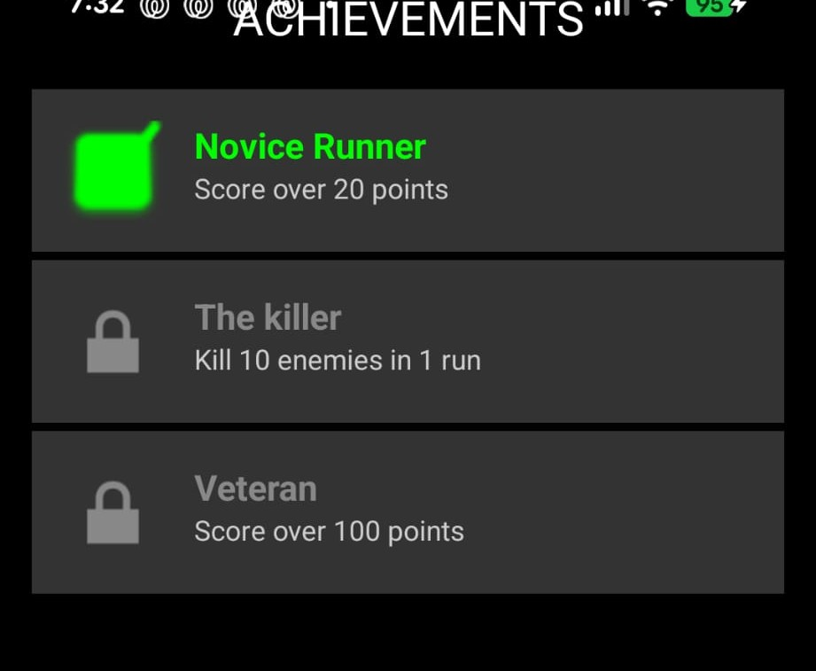
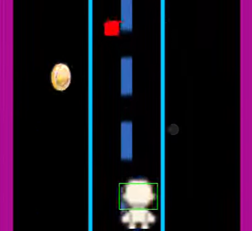

Player physics
Lane-switching movement and how the player responds to input as the run speeds up.
A Subway Surfers–inspired endless runner set in a coding-themed world, where players dodge bugs and collect syntax tokens.

Codeway Runner was a partnered assignment to build an Android scroller game inspired by Subway Surfers, with a unique modern twist: a coding-themed world where players dodge bugs and collect syntax tokens.
Build a mobile endless runner natively in Android Studio within two weeks, working as a pair.
I owned the core gameplay systems, everything that happens while the player is running. My partner focused on the UI screens and the achievement system.
Lane-switching movement and how the player responds to input as the run speeds up.
A spawn system driven by a difficulty curve, so obstacles keep pace with the player's increasing speed.
The core update loop tying movement, spawning and scoring together each frame.
We started with rough sketches of the lane-switching mechanic before moving into Android Studio. The biggest early decision was whether to use Unity or build natively. We chose Android Studio to meet the assignment brief and get hands-on with Java/Kotlin.

Syncing obstacle spawn timing with the player's increasing speed was tricky. Early playtests felt either too slow or impossible.
We tied the spawn rate to a difficulty curve variable rather than hardcoding values, so the challenge scales smoothly with speed.

I'd plan the achievement system earlier. It was added late and required us to refactor the scoring system, which cost us time we could have spent on polish.